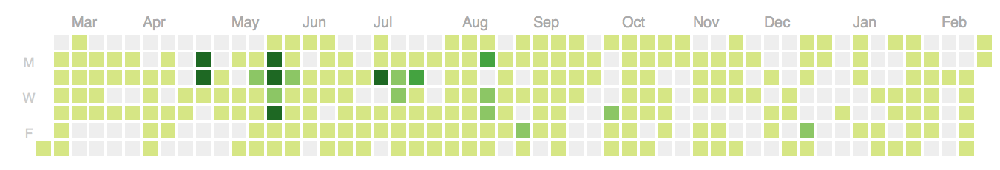

David Romulan: I feel like an alien.
Tue: testing cookbooks, partial file templates, monitoring as a runit service, erlang monitoring system, bootstrap to microwave
Mon, Feb 25, 2013: privilege package/service resources, secrets with gandalf, conf.d style config, first pair programming, and conventions for configuration

Sun: make and microwave for project dependencies and setup
Fri: good-bye cap, hello chef deploy, microwave unification, gem repo as git repo, and #bogoops
Thu: microwave as generator, adding cf/as to awsme, tvd-gollum, and admitting I'm a terrible programer
Wed: json/yaml sorting, microwave + chef 11, and tvdinners (alpha_omega, runit, unicorn), a bit of gollum
Tue, Feb 19, 2013: awsme, whatever, git gist, tome, puddle, and alien